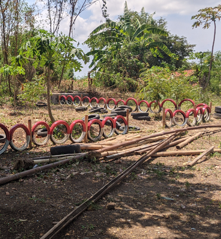
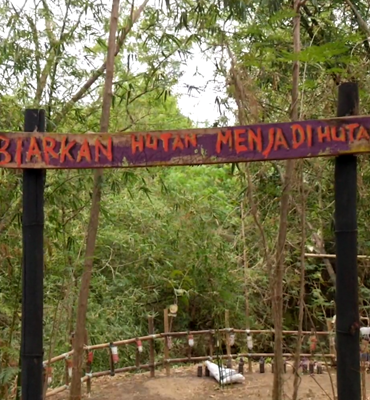
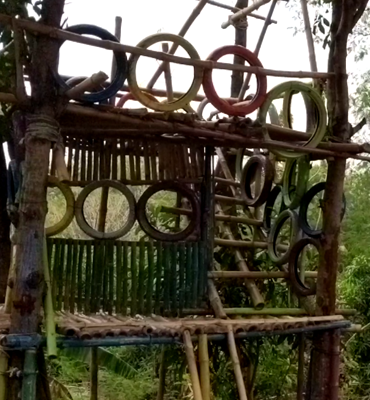

Ciwado
Ciwado Merupakan Taman Edukasi Alam yang terletak di Cipeujeuh Kulon
 Scroll Down
Scroll Down
Tentang
Ciwado Eko Wisata
Ciwado Sendiri adalah bendungan air mengalir , di dekat ciwado ada perkembangan Eko wisata yang dikembangkan oleh karang taruna dan KPS (Komunitas Peduli Sungai)
Gallery
Ciwado Taman Edukasi

Taman Edukasi
Taman Edukasi Ciwado Cipeujeuh Kulon

Spot Foto
Spot Foto Ciwado Taman Edukasi

Tempat Kumpul
Tempat Eko Wisata
Ciwado
Cipejeh Kulon, Cipeujeuh Kulon, Kec. Lemahabang, Cirebon, Jawa Barat 45183